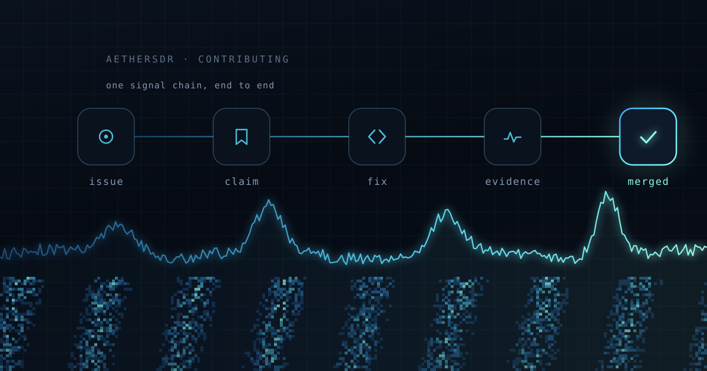

Your first contribution to AetherSDR
You no longer need to be a C++ programmer to fix something in this project. You need judgement, a radio, and the patience to check work — the same things that make a good Elmer.
Every open-source project says it welcomes newcomers. Most then hand you a wall of build instructions, a toolchain that fights you for a weekend, and a code review that assumes you already know what a rebase is. The welcome is sincere; the on-ramp is still a cliff.
That cliff is what actually changed. Not the code — the on-ramp. We've published a first-contribution cheat sheet that takes you from "I've never used GitHub" to a merged pull request, and the striking thing about it is that you never type a command. Every step is a sentence you say, in English, to an AI coding agent working inside your editor.
You're the control operator
Here's the part worth being clear about, because it's where the whole thing succeeds or fails: the agent does the typing, not the deciding.
It will install dependencies, find the bug, write the fix, and draft the pull request. It will also sound completely confident while being wrong. That is not a flaw you can prompt your way out of — it's the nature of the tool, and it's exactly why the human in the chair still matters. Your job is to read what it proposes before you say yes.
If you've ever supervised a Technician on your license, the arrangement will feel familiar. Someone else is on the mic. You're still responsible for what goes out. The cheat sheet states it as four rules, and the third one — it sounds confident even when wrong — is the one to internalize.
So the skill that makes you useful here isn't C++. It's knowing what AetherSDR is supposed to do when you key up, and noticing when it doesn't. That's operator knowledge, and no amount of model capability substitutes for it.
What it costs to start
Three things: a free editor, a GitHub account, and one AI coding agent. The cheat sheet walks through Copilot, Codex, and Claude Code side by side, including which tiers can actually drive your editor and which are chat only — a distinction worth checking before you pay for anything. There is a genuinely free path. Limits shift often enough that the cheat sheet links to the live pricing pages rather than quoting numbers that go stale.
The GitHub account is the one step nothing can do for you. Pick your callsign as the username — it's public, and it's the handle the rest of us will know you by.
Finding a first job
Issues tagged good first issue are the front door. Ask your agent to read the open ones and explain the top few in plain English, then to recommend one — it's surprisingly good at judging which bugs are self-contained.
Then claim it before you start. Claiming means adding yourself to the issue's assignees, not leaving a comment saying you'll take it. Our triage bot is auto-assigned to everything, so an issue showing only the bot is free. This is the one piece of etiquette that matters on day one: it's what stops two people quietly fixing the same bug on a Saturday afternoon.
Bring evidence, not vibes
"Works on my machine" is not evidence, and this is where a first PR usually either lands or stalls.
AetherSDR ships an agent automation bridge — a switch you flip at launch that lets your agent drive the running application directly: read the state of any control, move sliders, click buttons, capture the panadapter. So instead of asserting the bug is fixed, your agent can walk the issue's exact reproduction steps through the app and show the control values before and after.
It's the difference between eyeballing the S-meter and putting the radio on a service monitor. Reviewers here look for that trace, and a first pull request that arrives with one moves noticeably faster than one that says "works for me."
Two ground rules the cheat sheet is firm about, both of which protect your station rather than the codebase: check the radio isn't already in use before launching a test run, because two clients fighting over one radio produce evidence that is simply wrong. And ask for receive-only testing. The bridge refuses to transmit unless you explicitly enable it — leave it that way for your first run.
When it goes wrong
It will. A build will fail, a check will go red, GitHub will call your commit "Unverified" for reasons that make sense to roughly nobody the first time.
The entire troubleshooting procedure is: copy whatever you see, paste it to your agent, and add "This happened. What does it mean and what should we do?" That sentence resolves the overwhelming majority of first-timer problems, because the errors are well-known ones and the agent has seen them all.
Why we bother
Ham radio has always run on people explaining things to each other — someone signed your license test, someone talked you through your first HF contact, someone told you your audio was too wide. That tradition is the reason this project is worth contributing to at all.
The tooling now handles the part that used to gate people out: the syntax, the build system, the git incantations. What it can't supply is someone who knows what a properly-behaving panadapter looks like at 3 AM during a contest. That's you.
Read the cheat sheet, pick an issue, and open the pull request. If you get stuck at any point, start a discussion — asking early is not an imposition here, it's the tradition. 73.